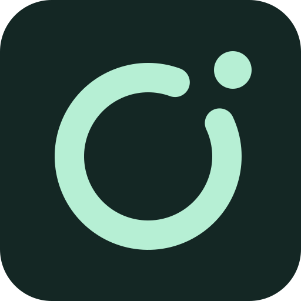

Describe the condition
Your agent writes a small TypeScript probe for a file, command, local service or API, and tries it before activation.

Self-StarterCustom events for coding agents
Tell your agent what to watch and what to do next. Local code checks files, jobs, services and APIs. When your condition is met, your agent picks up the task.
Codex · Claude Code · ZCode source install · OpenCode source install
Local probes. No model calls while waiting. macOS and Linux.
Get started
Choose the integration for your workflow. They share the same local trigger engine; installation and result delivery depend on the agent.
macOS or Linux · Node.js 20+ · Codex app or CLI
codex plugin marketplace add hyprh/self-starter
codex plugin add self-starter@self-starterRestart the Codex app or start a new CLI session. The first start installs the runtime and background service; allow a minute or two.
macOS or Linux · Node.js 20+ · Claude Code 2.1.224+
claude plugin marketplace add hyprh/self-starter
claude plugin install self-starter@self-starterStart a new Claude Code session. The first start installs the runtime and background service; allow a minute or two.
macOS or Linux · Node.js 24.14+ · Configured and authenticated ZCode CLI
git clone --branch v0.0.5 https://github.com/hyprh/self-starter.git
cd self-starter
npm ci
npm run build
node dist/src/cli/main.js install --zcode /absolute/path/to/zcode
node dist/src/cli/main.js doctorUse the actual ZCode CLI path, rather than the desktop app launcher. Keep this checkout available and start a new ZCode session after installation.
Available since v0.0.4. The commands use the v0.0.5 release tag. Source installation guide →
macOS or Linux · Node.js 20+ · OpenCode 1.x, version 1.19.3 or newer
git clone --branch v0.0.5 https://github.com/hyprh/self-starter.git
cd self-starter
npm ci
npm run build
node dist/src/cli/main.js install --opencode /absolute/path/to/opencode
node dist/src/cli/main.js doctorUse a CLI with working model access. Keep this checkout available and start a new OpenCode session. The installer adds a native plugin loader and preserves your configuration.
Available since v0.0.4. The commands use the v0.0.5 release tag. Source installation guide →
How it works
Your agent writes a small TypeScript probe for a file, command, local service or API, and tries it before activation.
A background service runs the probe, with no model calls during scheduled checks. The engine handles deduplication, cooldowns and expiry.
When the condition is met, Self-Starter hands your task to the agent or sends a notification. Results can reach you on the desktop or by email.
What to watch
The probe checks the condition. The agent handles the investigation or follow-up with the tools and permissions you provide.
“When this training run finishes, compare its results with the previous run.”
Watch a local log or result file, then ask for a useful comparison.
Try a local watch →“When a new CI failure appears, find the cause and report it here.”
Watch GitHub Actions with gh. The investigation needs GitHub access too.
Follow the CI example →“When a new error shows up in logs/app.log, trace it to the code.”
Read a log file, then hand the matching stack trace to your agent.
Explore the guide →Also watch releases, folders, service health or market data. Ready-made recipes include Futu news and IBKR account activity.
A recorded stock watch
“Tell me when analysts change their rating or price target on Tencent or NVIDIA, and what the community thinks.”
12:21:47 1 item(s) from the last 48 h on Futu (Tencent 1, NVDA 0) “Morgan Stanley: Maintains "Overweight" rating on Tencent (00700) with a target price of HKD 550…” counts as seen; the next report fires
Probe output recorded on October 13, 2026, UTC. This first check establishes the baseline. When a new report arrives, the agent can use Futu's research and community tools to summarize what changed. Start with the futu-news recipe.

SELF-STARTER / DESKTOP NOTIFICATION
AMD down 4.31%.Investigation ready in Codex.
Edited replay of a real Codex + Futu watch. The interface and notification are illustrated; quotes are historical. This demo shows the Codex integration.